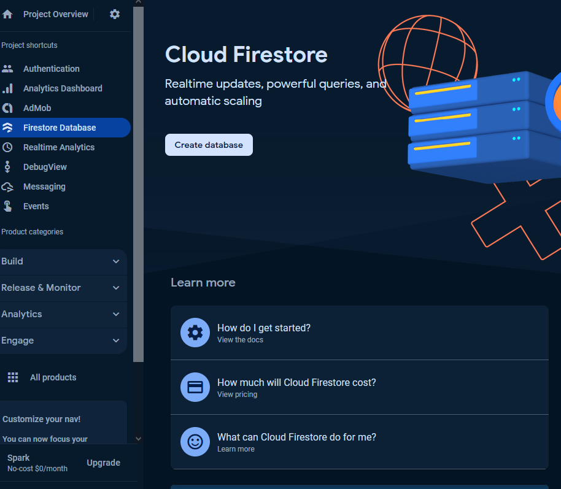

I added an app to get started. First step is to enter my bundle identifier (apple) and package name (google play).
I added an app to get started. First step is to enter my bundle identifier (apple) and package name (google play).
 Next is to download the config files
Next is to download the config files
 Then import the Firebase Unity SDK. The current version is 11.6.0. As of now I'm not sure what other firebase products to import yet
Then import the Firebase Unity SDK. The current version is 11.6.0. As of now I'm not sure what other firebase products to import yet
 That's all the steps to add an app. Firebase documentation can be found here. Sample Firebase apps can be found here
That's all the steps to add an app. Firebase documentation can be found here. Sample Firebase apps can be found here
 I can place the google service files anywhere in the assets folder. Therefore, I placed in Assets/Plugins/Firebase folder
I unzip the firebase unity sdk and unzipped and saw many unity packages including FirebaseAuth, FirebaseFireStore, FirebaseFunctions etc. I may need to use these eventually. However, for now I only need FirebaseAnalytics
When importing FirebaseAnalytics, I noted down that the ExternalDependencyManager is version 1.2.177. This is the one that's compatible with the firebaseAnalytics I'm using
Also noticed that firebase analytics has dependencies on firebase app version 11.6.0
After importing, some errors appeared. One related to XCode -which may be due to the platform I'm on since I'm using windows. A popup window appeared as well, I clicked Enable
I can place the google service files anywhere in the assets folder. Therefore, I placed in Assets/Plugins/Firebase folder
I unzip the firebase unity sdk and unzipped and saw many unity packages including FirebaseAuth, FirebaseFireStore, FirebaseFunctions etc. I may need to use these eventually. However, for now I only need FirebaseAnalytics
When importing FirebaseAnalytics, I noted down that the ExternalDependencyManager is version 1.2.177. This is the one that's compatible with the firebaseAnalytics I'm using
Also noticed that firebase analytics has dependencies on firebase app version 11.6.0
After importing, some errors appeared. One related to XCode -which may be due to the platform I'm on since I'm using windows. A popup window appeared as well, I clicked Enable
 After I click enable, another window appeared. I am waiting for it to load...for a long time. I closed it and tried pressing play and exit play mode. The errors and the same window will reappear.
I tried pushing to github, but file size too big. To resolve this I added "*.bundle filter=lfs diff=lfs merge=lfs -text" in .gitattributes. This is for lfs files.
I tried making a build just to see if a build can be made. It has been building for over 2 hours. So I cancelled it (forced closed cause cancelled was taking hours as well). Discarded my changes. Made a new branch. Created a new firebase project but this time only for Android. I still get Resolver issues and long building times. Turns out it was because my file path (the parent folder!!!) had a space in it. After removing the space > reopend the project > Android Resolver finished and I can make a build that finished in under 10 minutes.
I want to try to log some events. I followed this documentation and this Youtube Video to initialize firebase. Then followed this documentation to log events. The initialization appears to only occur once as the Debug.Log only printed the first time I tested in the editor.
I checked Firebase analytics, but nothing appeared. Sometimes it can take up to 24 hours when you first create an event. However, I think I didn't initialize firebase properly or setup connecting Unity to firebase correctly. I may need to follow this Youtube video Unity | Getting started with Firebase Analytics with Unity | Game development (2023)
I then noticed in the analytics dashboard, a 0.0.9.0 version appeared.
When I clicked on that it tells me that as of 8:36pm there was one user who used it for 37 seconds. So SOMETHING IS SENDING!!
At first I wasn't sure if it was sending from an android build or my editor. However, according to this Official Firebase Analytics Youtube tutorial It says that analytics only works on the phone and not the editor! I then checked Realtime Analytics and I can see some default events that Firebase already tracks. So that means analytics is connected! Probably my own events will take longer - video says up to 1 hours to upload and 24 hours to process.
After 24 hours I still did not see my events
I decided to follow the official firebase youtube tutorial mentioned earlier. In FirebaseAnalyticsLearning.cs, I changed the code and commented out the LogEvents
Then a LevelLogginBehaviour.cs was created. At the
After I click enable, another window appeared. I am waiting for it to load...for a long time. I closed it and tried pressing play and exit play mode. The errors and the same window will reappear.
I tried pushing to github, but file size too big. To resolve this I added "*.bundle filter=lfs diff=lfs merge=lfs -text" in .gitattributes. This is for lfs files.
I tried making a build just to see if a build can be made. It has been building for over 2 hours. So I cancelled it (forced closed cause cancelled was taking hours as well). Discarded my changes. Made a new branch. Created a new firebase project but this time only for Android. I still get Resolver issues and long building times. Turns out it was because my file path (the parent folder!!!) had a space in it. After removing the space > reopend the project > Android Resolver finished and I can make a build that finished in under 10 minutes.
I want to try to log some events. I followed this documentation and this Youtube Video to initialize firebase. Then followed this documentation to log events. The initialization appears to only occur once as the Debug.Log only printed the first time I tested in the editor.
I checked Firebase analytics, but nothing appeared. Sometimes it can take up to 24 hours when you first create an event. However, I think I didn't initialize firebase properly or setup connecting Unity to firebase correctly. I may need to follow this Youtube video Unity | Getting started with Firebase Analytics with Unity | Game development (2023)
I then noticed in the analytics dashboard, a 0.0.9.0 version appeared.
When I clicked on that it tells me that as of 8:36pm there was one user who used it for 37 seconds. So SOMETHING IS SENDING!!
At first I wasn't sure if it was sending from an android build or my editor. However, according to this Official Firebase Analytics Youtube tutorial It says that analytics only works on the phone and not the editor! I then checked Realtime Analytics and I can see some default events that Firebase already tracks. So that means analytics is connected! Probably my own events will take longer - video says up to 1 hours to upload and 24 hours to process.
After 24 hours I still did not see my events
I decided to follow the official firebase youtube tutorial mentioned earlier. In FirebaseAnalyticsLearning.cs, I changed the code and commented out the LogEvents
Then a LevelLogginBehaviour.cs was created. At the Start(), a LevelStart event will be logged and OnDestroy() a LevelEnd will be logged
To change scenes when clicking a button. A OnChangeLevelClick.cs is created. I learned that we can use the interface UnityEngine.EventSystems.IPointerClickHandler to click buttons. There is a OnPointerClick.
In FirebaseMainMenu scene. ChangeLevelCllick.cs is attached to the button "MainMenu". Nothing needs to be the on the OnClick in the inspector. Simply attach the script, fill in the scene name and when you press the button, scene will change (assuming you added the scenes in build settings)
In FirebaseLevel1 Scene, the LevelLoginBehaviour is attached so that everytime we enter and exit FirebaseLevel1 scene, the event will be logged.
NOTE THIS PART IS FOR ANDROID ONLY: Then I make a build, sideload. I want to see my log events in Firebase DebugView. To do that, I needed to do somethings in the command line. First we need to set the events from the device to firebase. Events are cached and sent to firebase in batches. With this property set, we send it automatically adb shell setprop debug.firebase.analytics.app insert-your-package-name. Secondly, to actually print analytics information to the terminal adb shell setprop log.tag.FA VERBOSE. And then thirdly adb shell setprop log.tag.FA-SVC VERBOSE. Fourth, now launch the app. Then you need to contract FA and FA-SVC tag. adb logcat -s "FA","FA-SVC". Lastly, when you are done debugging adb shell setprop debug.firebase.analytics.app .none In Firebase DebugView, I will see the events! So at least I know events are working. Now to wait 24 hours. Stay tuned...
I checked after 12 hours. The LevelStart and LevelEnd event exists!!
I can get analytics but remember our goal is to store user data like weapons. So next let's figure out how to store user login using Firebase Authentication. I'll try to follow this link. First I went into my project on firebase > project settings > Service Accounts > Generate new private key. A warning pops up saying "Your private key gives access to your project's Firebase services. Keep it confidential and never store it in a public repository.Store this file securely, because your new key can't be recovered if lost."
However, after I did that and reread the title of the documentation, it says it is for Custom server. The instructions says to copy this file to your authentication server. I don't have a custom server. I want to use firebase own server! Instead, I should be following this Get started link. I'll need to import the FirebaseAuth.Unitypackage from this Firebase Unity SDK. This link will automatically download sdk In firebase, I went to my project > Authentication > Sign in method > Email/Password Enable Email/Password Back into Unity. I created a script called FirebaseLogin. Instead of creating a login UI. I'm hardcoding the email which I retrieved from this temp email website and the password. Pressing L will run the code In firebase Authentication, I can see the email login information! If I press L again, it will recognize that this user already exist. Now the user registers, can the user login? Continuing following the get started link. I added this piece of code, if user presses "S", the user should be logged in If I passed in the wrong email or password, I would get an error If I pass in the correct information then there will be a debug log that the user signed in successfully On firebase I can see the Sign in date has changed So it's great I can sign users in. There are also other ways to manage users like sign out, delete users, update password, send verification email etc. However, how do I store information in a database? There is firestore database - Cloud firestore. I want to see if I can use this to my advantage to store things like what weapons users has bought. Storing data in Cloud firestore can do things like allowing users to access their information across devices or share progress with other players. I will follow this Get Started for Cloud Firestore  I clicked create database button. First the prompt asked me to select a location. There is a warning "After you set this location, you cannot change it later. Also, this location setting will be the location for your default Cloud Storage bucket. " The secure rules I select is "start in test mode", because I am not familiar with cloud firestore yet. The warning says "The default security rules for test mode allow anyone with your database reference to view, edit and delete all data in your database for the next 30 days ". I am then provided with this page There is instructions regarding "You must minify the build to avoid the message Error while merging dex archives". I'm curious to see when this error will appear so I'm not going to look into how to configure this yet until this error appears